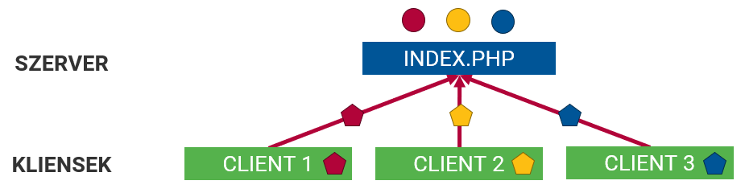
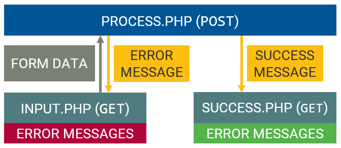
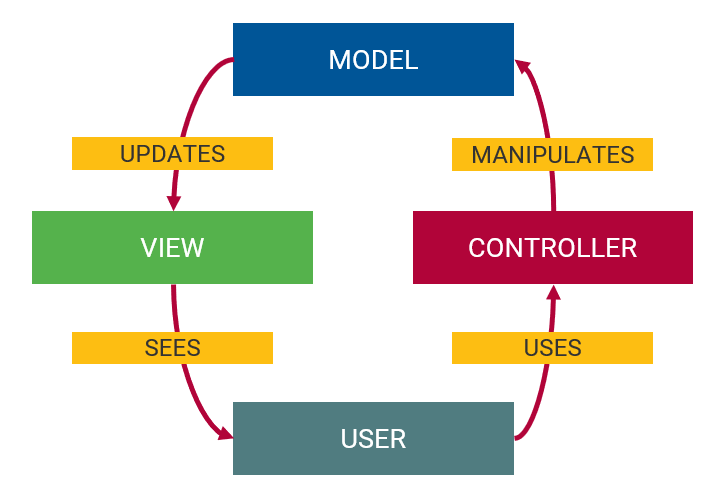

Webprogramozás
AJAX/JSON kommunikáció, tervezési minták
Visnovitz Márton
egyetemi tanársegéd
visnovitz.marton@inf.elte.hu
Horváth Győző
egyetemi docens
horvath.gyozo@inf.elte.hu
Ismétlés
Ismétlés
- Output generálás
-
Input
- Kliens
- Környezet
- Fájl (segédosztályok)
- Űrlapfeldolgozás
-
Munkamenet (segédosztályok)
- Autentikáció
- Autorizáció
Ismétlés

AJAX
Szerveroldali kiszolgálás
AJAX
- HTTP kérés JavaScriptben
- Oldalújratöltés nélkül
- A háttérben

Kliens – fetch
async function getPoster() {
const title = document.querySelector('input').value;
const response = await fetch(`http://www.omdbapi.com/?t=${title}&apikey=2dd0dbee`);
const json = await response.json();
document.querySelector('img').src = json.Poster;
}Szerveroldal
- Mindegy, hogy normál vagy AJAX kérés (HTTP)
- A válasz létrehozása programmal
- Kimenet generálás
$composers = [
'Mozart',
'Beethoven',
'Dvorak',
];
print(implode(';', $composers));Mozart;Beethoven;Dvorak$composers = [
'Mozart',
'Beethoven',
'Dvorak',
];
echo json_encode($composers);[
"Mozart",
"Beethoven",
"Dvorak"
]<?php
$composers = [
'Mozart',
'Beethoven',
'Dvorak'
];
?>
<ul>
<?php foreach($composers as $name) : ?>
<li>Beethoven</li>
<?php endforeach ?>
</ul><ul>
<li>Mozart</li>
<li>Beethoven</li>
<li>Dvorak</li>
</ul>AJAX kommunikáció a szerverrel
Kommunikáció kellékei
- Űrlapadatok
- URL paraméterek (
GET) - HTTP üzenettörzs (
POST, …) - fejlécek
- választípusok
Űrlapadatok – FormData
<form>
<input type="text" name="event" value="Advent">
<input type="text" name="year" value="2019">
</form>// Create payload
const form = document.querySelector("form");
const formData = new FormData(form);
// OR
const advent = document.querySelector("[name=event]");
const formData2 = new FormData();
formData2.append("event", advent.value);Kérésszöveg – URLSearchParams
<form>
<input type="text" name="event" value="Advent">
<input type="text" name="year" value="2019">
</form>const form = document.querySelector("form");
const formData = new FormData(form);
// Option 1.
const params = new URLSearchParams(formData);
const queryString = params.toString();
// "event=Advent&year=2019&place=St+Gerardus+Church"
// Option 2.
const url = new URL("http://example.com/foo.php")
Array.from(formData).forEach(([key, value]) => url.searchParams.append(key, value));
const queryString = url.searchParams.toString();
// http://example.com/foo.php?event=Advent&year=2019&place=St+Gerardus+ChurchAdatok küldése
async function post(url) {
const form = document.querySelector("form");
const formData = new FormData(form);
const response = await fetch(url, {
method: "POST",
body: formData
});
}HTTP fejlécek küldése
fetchRequestHeaders
const headers = new Headers();
headers.append("Content-Type", "text/plain");
const options = {
method: "POST",
headers: headers
}
const response = await fetch(url, headers);JSON küldése
const data = {
type: "drama",
favourites: [
"Macbeth",
"Hamlet",
]
}async function postJSON(url, data) {
const response = await fetch(url, {
method: "POST",
headers: {
"Content-Type": "application/json",
},
body: JSON.stringify(data)
})
}Bemenet olvasás - server
// FormData
$url_data = $get["url_data"];
$body_data = $_POST["body_data"];// JSON
$json = file_get_contents('php://input');
$data = json_decode($json, true);Válaszformátumok
Válaszformátumok
- A válasz az előállítás módjától függően lehet
- Statikus tartalom
- Dinamikus tartalom
- A kliens szempontjából mindegy, hogy ki állítja elő a tartalmat (nem is tud róla)
- Formátumok
- Egyszerű szöveg
- JSON
- HTML
- XML
- JavaScript
- stb. (pl. CSS,…)
Technikai háttér
fetch
Responseobjektum.text().json().formData().blob().arrayBuffer()
Szöveges válasz
alma,körte,szilva,barack,eper,málna,szeder$data = ["alma","körte","szilva","barack","eper","málna","szeder"];
print(implode(",", $data)));async function text() {
const response = await fetch(`fruits.txt`);
const text = await response.text();
const fruits = text.split(',');
}Ritkán használatos, bármi lehet, egyedi feldolgozás
JSON válasz
[ "alma", "körte","szilva", "barack", "eper", "málna", "szeder"]$data = ["alma","körte","szilva","barack","eper","málna","szeder"];
print(json_encode($data)));async function json() {
const response = await fetch(`fruits.json`);
const fruits = await response.json();
}Legelterjedtebb, egyszerű
HTML válasz
<ul>
<li>alma</li>
<li>körte</li>
<li>szilva</li>
<li>barack</li>
<li>eper</li>
<li>málna</li>
<li>szeder</li>
</ul>$data = ["alma","körte","szilva","barack","eper","málna","szeder"];
print("<ul>" . PHP_EOL);
foreach ($data as $item) {
print("<li>${item}</li>" . PHP_EOL);
}
print("</ul>" . PHP_EOL);async function html() {
const response = await fetch(`fruits.html`);
const fruitsHTML = await response.text();
// innerHTML
}Mikroformátum, egyszerű feldolgozás
Kódszervezés, tervezési minták
Kódszervezés, tervezési minták
-
Kódszervezés módjai
- Logikai kódszervezés
- Fizikai kódszervezés
-
Tervezési minták
- PRG minta
- MVC architektúra
Kódszervezés eszközei
- Logikai
- megjegyzések
- függvények
- osztályok, interfészek
- névterek
- Fizikai: fájlok, könyvtárak
- Nyelvi elemek
include,include_once- osztályok automatikus betöltése
(autoloading)
- Tervezési minták (pl. MVC)
Logikai kódszervezés
(megjegyzések)
✒>// Segédfüggvények<✒
/* ... */
✒>// Bemenet ellenőrzése<✒
if (/* ... */) {
✒>// Beolvasás, előfeldolgozás<✒
/* ... */
✒>// Bemenet ellenőrzése<✒
/* ... */
✒>// Feldolgozás<✒
/* ... */
}
✒>// Adatok lekérdezése<✒
/* ... */
✒>// Megjelenítés (HTML sablon)<✒Logikai kódszervezés
(függvények, osztályok, interfészek)
function array_all_keys_exist($array, $keys) {/* ... */}
function verify_post(...$inputs) {/* ... */}interface IFileIO {/* ... */}
interface IStorage {/* ... */}
abstract class Storage implements IStorage, IFileIO {/* ... */}
class JsonStorage extends Storage {/* ... */}
class SerializeStorage extends Storage {/* ... */}Fizikai kódszervezés
(fájlok, könyvtárak)
- Fájlok
- logikai kódszervezési egységek külön fájlokba
- fájlok függése egymástól, függőség betöltése
(include,include_once,require,require_once) - függőségek manuális kezelése → “bootstrapping”
- Mappák
- fájlok típusa alapján (pl. adatfájlok, osztályok, sablonok)
- tervezési minta alapján (vezérlők, modellek, nézetek)
Bootstrapping
_init.php
// Start session
session_start();
// Load dependencies
include("dependency1.php");
include("dependency2.php");
// Connect to data sources
$storage1 = new JsonStorage("storage1.json");
$storage2 = new JsonStorage("storage2.json");
// Create global variables
$errors = [];foo.php
include_once("_init.php");Mappaszerkezet 1.
-
lib-
classes -
utils -
_init.php
-
-
storage-
storage1.json -
storage2.json
-
-
partials-
header.php -
footer.php
-
-
index.php -
page1.php -
page2.php
Osztályok automatikus betöltése
Név alapján megpróbálhatunk automatikusan betölteni egy osztályt futási időben, ha az nem található.
_init.php
spl_autoload_register(function ($class) {
include_once("./classes/" . strtolower($class) . ".class.php");
});Kódszervezés, tervezési minták
-
Kódszervezés módjai
- Logikai kódszervezés
- Fizikai kódszervezés
-
Tervezési minták
- PRG minta
- MVC architektúra
Tervezési minták
Példa
TODO alkalmazás
Űrlapfeldolgozás lépései
- Űrlap megjelenítése
- Küldés → adatok feldolgozása (mentése)
- Siker oldal megjelenítése
Hogy jelenítsük meg a siker oldalt? Mi történik frissítéskor?
if (verify_post("todo")) {
// Beolvasás
$todo = $_POST["todo"];
// Feldolgozás
$todo_storage->add($todo);
}
// Lekérdezés
$todos = $todo_storage->findAll();<!-- Megjelenítés -->POST-REDIRECT-GET módszer
Ötlet: POST konvertálása GET-té átirányítással
- Az űrlap megjelenítése GET metódussal
- Adat elküldése POST metódussal
- Sikeres feldolgozás esetén átirányítás a siker oldalra
- Siker oldal megjelenítése GET metódussal
POST (add-todo.php)
if (verify_post("todo")) {
// Beolvasás
$todo = $_POST["todo"];
// Feldolgozás
$todo_storage->add($todo);
}
✒>redirect("todo.php");<✒GET (todo.php)
// Lekérdezés
$todos = $todoRepository->all();<!-- Megjelenítés -->Hibakezelés
“Laza” PRG (kb. ezt használtuk eddig)
- Az űrlap megjelenítése GET metódussal
- Adat elküldése POST metódussal
- Hiba esetén az űrlap megjelenítése hibaüzenetekkel és a felküldött adatokkal
- Adat újbóli elküldése POST metódussal
- Sikeres feldolgozás esetén átirányítás a siker oldalra
- Siker oldal megjelenítése GET metódussal
Hibakezelés 2.
“Extrém” PRG: oldalt megjeleníteni csak GET metódussal lehet!
- Az űrlap megjelenítése
GET - Adat elküldése egy másik oldalra
POST - Hiba esetén átirányítás az 1. pontra
redirect- a hibaüzeneteket és a felküldött adatokat a két kérés között meg kell őrizni
- munkamenet-kezelés (flash adatok)
- Adat újbóli elküldése
POST - Sikeres feldolgozás esetén átirányítás a siker oldalra
redirect - Siker oldal megjelenítése
GET
PRG

Átirányításkor hogyan jutnak vissza az adatok?
Flash adatok
Olyan adatok, amelyek csak egy kérés idejéig élnek a munkamenetben (nálunk: amíg ki nem vesszük őket)
function set_flash_data($key, $value) {
$_SESSION[$key] = $value;
}
function get_flash_data($key) {
$value = $_SESSION[$key] ?? null;
unset($_SESSION[$key]);
return $value;
}Példa: Todo
GET (todo.php)
session_start();
$todo_storage = new JsonStorage("storage/todos.json");
$errors = get_flash_data("errors") ?? [];
$todos = $todoRepository->all();<form action="add-todo.php" method="post">
Todo: <input type="text" name="todo">
<button type="submit">Add todo</button>
</form>
<?php var_dump($errors); ?>
<h1>Todos</h1>
<ul>
<?php foreach($todos as $todo) : ?>
<li><?= $todo ?></li>
<?php endforeach ?>
</ul>Példa: Todo
POST (add-todo.php)
$errors = [];
if (verify_post("todo")) {
$todo = $_POST["todo"];
if (empty($todo)) {
$errors[] = "Todo must not be empty";
}
if (empty($errors)) {
$todo_storage->add($todo);
} else {
set_flash_data("errors", $errors);
}
}
redirect("todo.php");Koncepciók szétválasztása
Alkalmazás felbontása működés szerint:
- Oldalak, amik információt jelenítenek meg,
bemenetként szolgálnak (GET) - Oldalak, amik csak feldolgozást végeznek,
utána átirányítanak (POST) - Működéshez szükséges segédfájlok
- segédfüggvények
- segédosztályok
Példa: TODO
todo-list.php
include_once("_init.php");
$errors = get_flash_data("errors") ?? [];
$todo_storage->findAll();<?php include("partials/header.php"); ?>
<form method="post" action="action/add-todo.php">
<input type="text" name="todo">
<button type="submit">Add</button>
</form>
<?php foreach($errors as $error): ?>
<div class="error"><?= $error ?></div>
<?php endforeach; ?>
<?php foreach($todos as $todo): ?>
<div class="todo"><?= $todo ?></div>
<?php endforeach; ?>
<?php include("partials/footer.php"); ?>Példa: TODO
actions/add-todo.php
include_once("_init.php");
if (verify_post("todo")) {
$todo = trim($_POST["todo"]);
if (empty($todo)) {
$errors[] = "Todo must not be empty";
}
if (empty($errors)) {
$todo_storage->add($todo);
}
}
redirect("../ pages/todo-list.php");Mappaszerkezet 2.
-
lib-
utils -
_init.php
-
-
storage-
todos.json
-
-
partials-
header.php -
footer.php
-
-
actions-
add-todo.php
-
-
todo-list.php
Koncepciók szétválasztása
Alkalmazás felbontása felelősségi körök szerint:
- Megjelenésért felelős: NÉZET (View)
- Működésért felelős: VEZÉRLŐ (Controller)
- Adatokért felelős: MODELL (Model)
- Működéshez szükséges segédfájlok
- segédfüggvények
- segédosztályok
MVC

Fogalmak
- Vezérlő
- Egy adott végponthoz rendelt logika
- Valamilyen URL, pl.
page.php - 1 végpont = 1 fájl = 1 funkcionalitás = 1 vezérlő
- Irányítás (routing)
- Végpont vezérlőhöz rendelése
- Eddig: webszerver (alacsony szintű)
Routing
- Útvonal + HTTP metódus → működés
- HTTP metódusok
- GET, POST, DELETE, stb.
- Webszerver automatikusan
- Manuálisan egy belépési ponttal
Manuális routing
- Lehetőségek
http://example.com/index.php?path=registration✓http://example.com/index.php?registrationhttp://example.com/index.php/registrationhttp://example.com/registration
Manuális routing
class Router {
private $routes = [];
public function start() {
$path = $_GET["page"] ?? "index";
$http_method = $_SERVER["REQUEST_METHOD"];
foreach ($this->routes as $route) {
if ($route["path"] === $path && $route["http-method"] === $http_method) {
$controller_name = $route["controller"];
$method_name = $route["method"];
$controller = new $controller_name();
$controller->$method_name();
return;
}
}
}
public function get($path, $controller, $method) {
$this->routes[] = [
"path" => $path,
"http-method" => "GET",
"controller" => $controller,
"method" => $method
];
}
public function post($path, $controller, $method) { /*...*/ }
public function put($path, $controller, $method) { /*...*/ }
public function delete($path, $controller, $method) { /*...*/ }
}Elővezérlő
index.php
// index.php
// start session
session_start();
// auto-loading controllers and models
/* ... */
// start routing
$router = new Router();
$router->get("/todos", "TodoController", "showForm");
$router->post("/add-todo", "TodoController", "addTodo");
$router->start();MVC
- Model: definiálja a tárolt típusokat és biztosítja a kapcsolatot az adatforrás felé
- Kontroller: a végpontokat működését definiálja
- Adatbeöltés + nézet megjelenítése
- Adatfeldolgozás + átirányítás
- Nézet: megfelelő bemenő adatok alapján megjelenít egy sablont
Mappaszerkezet 3.
-
storage-
storage1.json -
storage2.json
-
-
partials-
header.php -
footer.php
-
-
index.php
-
lib-
model.php -
view.php -
controller.php -
router.php
-
-
controllers-
todo.controller.php
-
-
models-
todo.model.php
-
-
views-
todo-list.view.php -
todo-form.view.php
-
Eredmény
index.php: elővezérlő, routingstorage: tárolt adatokcontrollers: vezérlő osztályok- beolvasás (
$_POST,$_GET) - feldolgozás (→ repository)
- kiírás (view)
- beolvasás (
modelsrepository osztályok- feldolgozó függvények
views: sablonok- → Modell-Nézet-Vezérlő tervezési minta
- → Elővezérlő tervezési minta
Fájlok közvetlen meghívásának védelme
- Tokenes védelem
- alkalmazás szintű
- .htaccess védelem
- webszerver szintű
- webkönyvtáron kívüli elhelyezés
- operációs rendszer szintű
Tokenes védelem
- Token definiálása az elővezérlőben
// index.php
define('TOKEN', 'A secret token');
// ...- További szkriptek első sora ezt vizsgálja
// classes/registration_controller.php
<?php if ( ! defined('TOKEN')) die('Directly not accessible!');.htaccess védelem
- Könyvtár alapú konfigurációs fájl
- Apache képes kezelni
- Ehhez külön könyvtárba kell
- (webprogramozas szerveren nem működik (nginx))
- Könyvtáranként
.htaccessállományclassestemplatesdata
# .htaccess
deny from all|+ (D) classes
| |--+ .htaccess
|+ (D) data
| |--+ .htaccess
|+ (D) templates
| |--+ .htaccess
|+ index.phpElhelyezés webkönyvtáron kívül
Könyvtárszerkezet
- (D) www
|--+ index.php
- (D) app
|--+ (D) classes
|--+ (D) data
|--+ (D) templatesÖsszefoglalás
- AJAX szerveroldalon
- kimenet generálás
- szöveg, JSON, HTML, stb.
- bemenet:
FormDatavagyJSON
- PRG minta
GET- megjelenítés, adatküldésPOST- feldolgozás, átirányítás
- Modell-Nézet-Vezérlő minta
- vezérlő: működés
- modell: adatok
- nézet: sablon